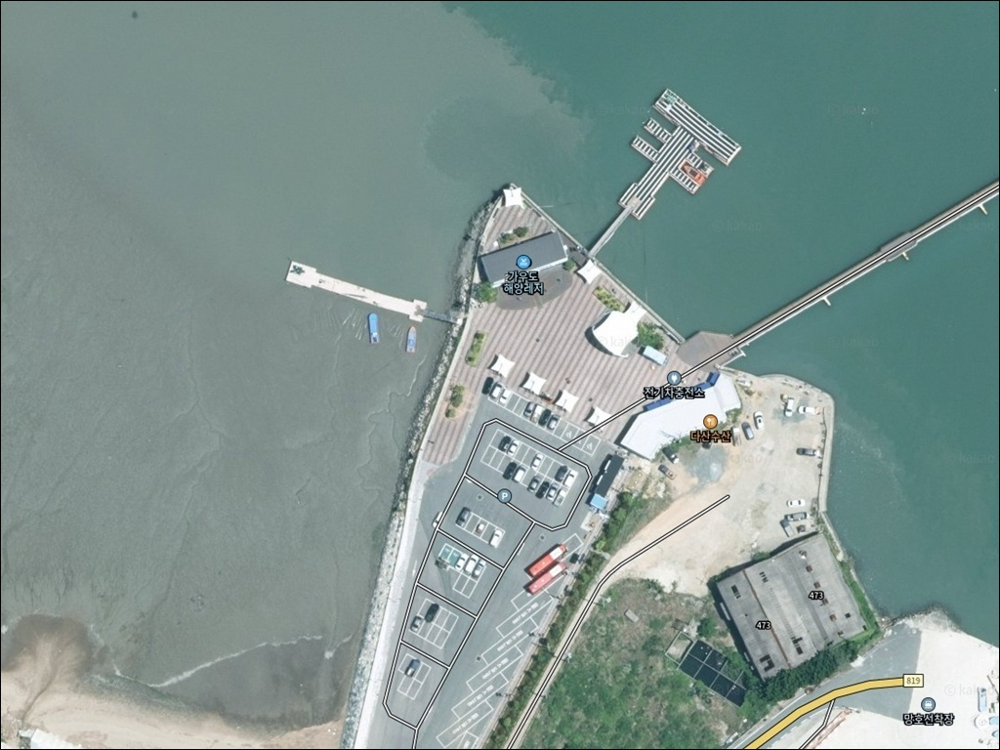
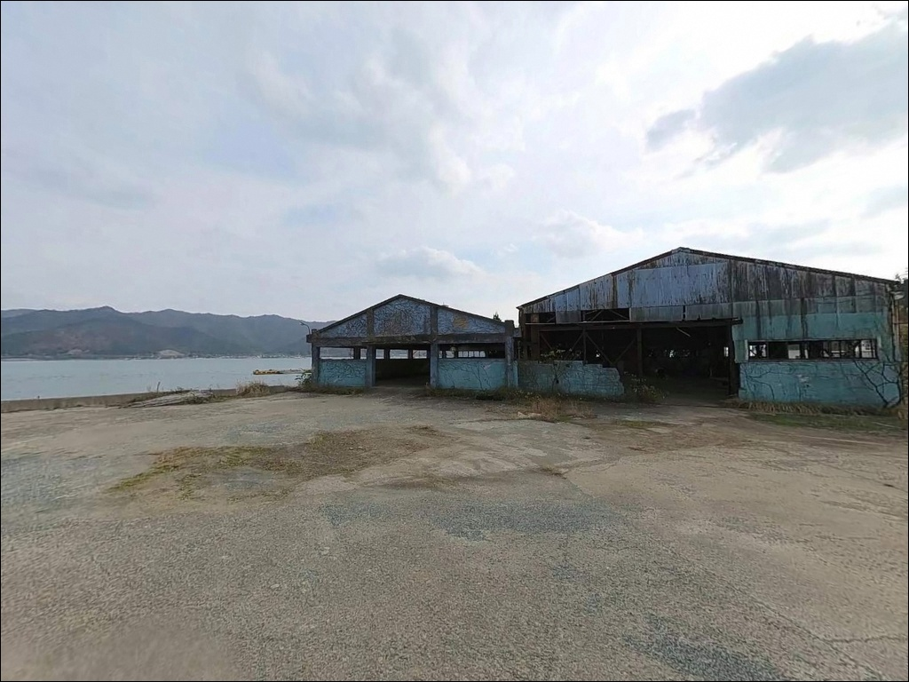
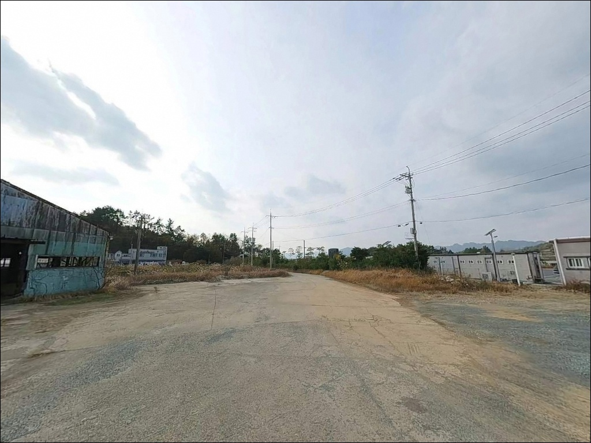
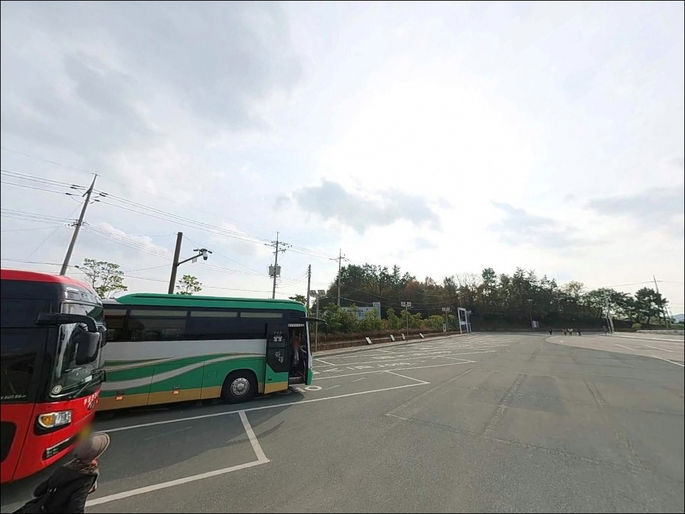
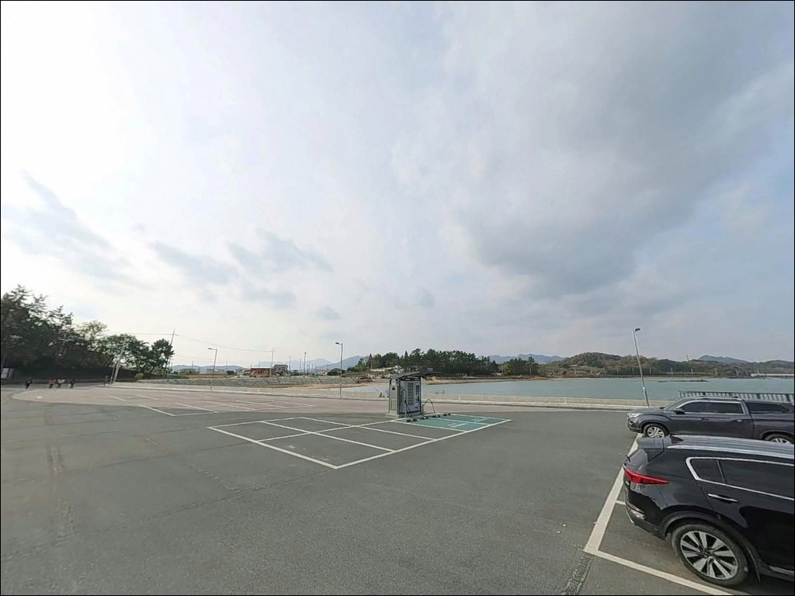
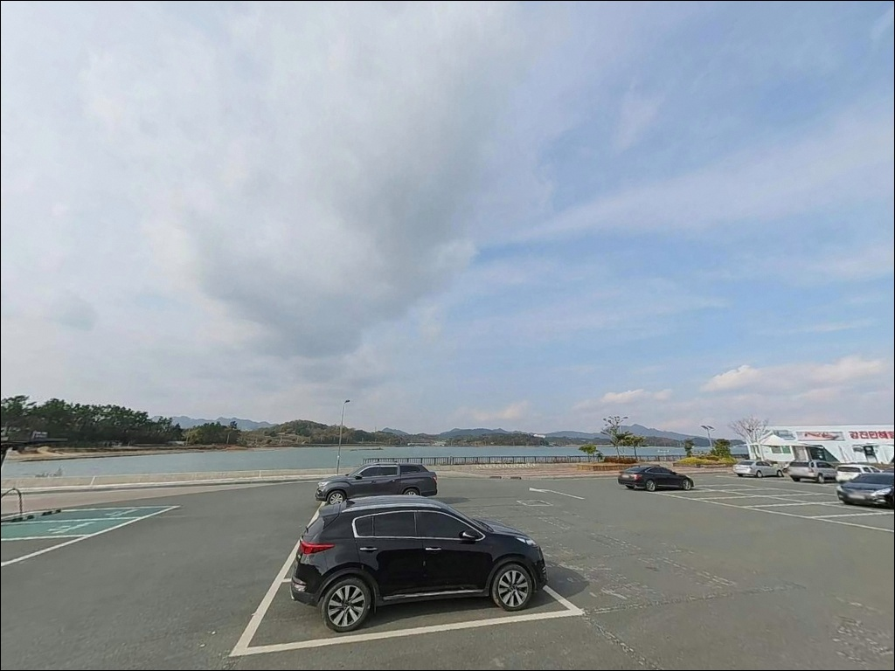
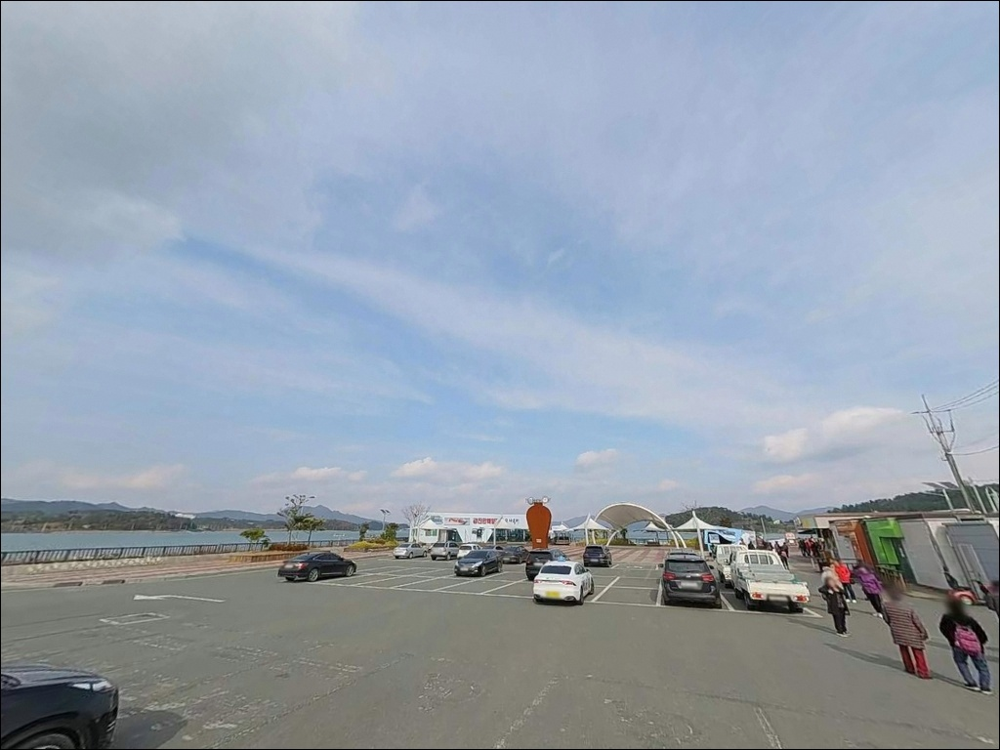
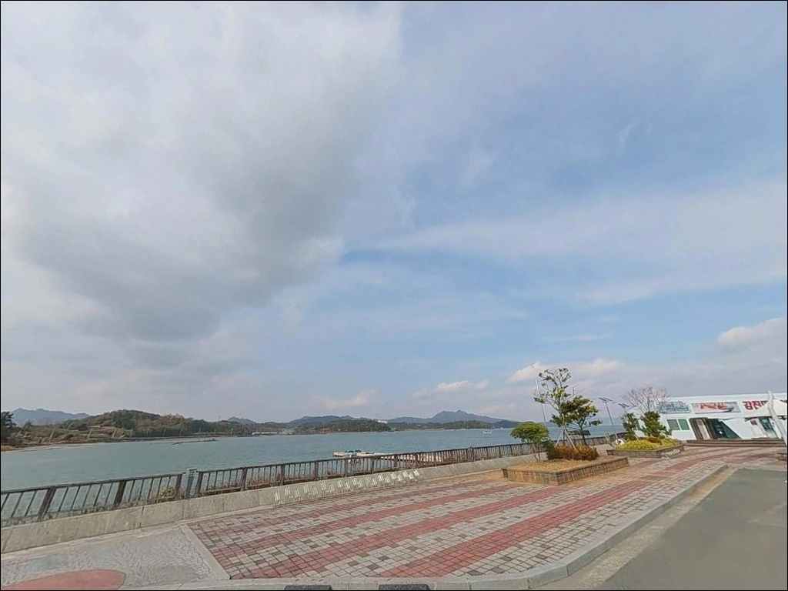
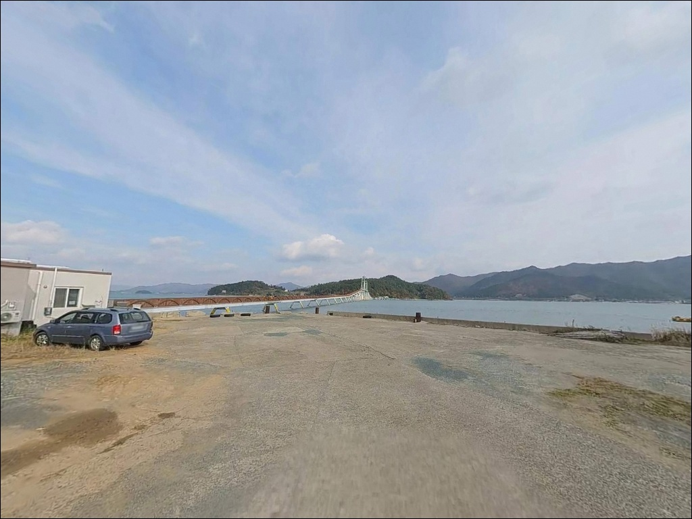

이 페이지에는 광고(제휴 링크 포함)가 있으며, 광고 링크를 통해 구매하면 운영자가 판매 수익 또는 수수료를 받을 수 있습니다. 포인트 사진: 카카오맵 스카이뷰·로드뷰. 이 페이지의 지도·사진 이미지는 카카오맵의 실제 서비스 이미지와 다를 수 있습니다.


망호출렁다리 주차장, 전남 강진군 넓은 주차 공간에서 즐기는 편리한 바다 차박 낚시 명소
포인트 안내
망호출렁다리 주차장 (망호선착장)
전남 강진군 도암면 신기리 123-2
강진만 내만은 간조 때 갯벌이 넓게 드러나는 지형입니다.
뻘바닥이 노출된 상태에서 낚시를 시작하면
어류 접근 자체가 이루어지지 않습니다.
들물이 들어오는 타이밍에 자리를 잡아야
이 포인트에서 낚시다운 낚시가 가능합니다.
가우도와 육지를 잇는 망호출렁다리(약 716m)의
육지 측 진입부에 위치한 이곳은,
넓은 공영 주차장을 갖추고 있어
진입과 접근성이 강진만 일대에서 가장 편한 포인트 중 하나입니다.
단, 관광지 성격이 강해 낚시보다 나들이객이 더 많은
주말을 피하는 것이 기본 전략입니다.
이 글은 망호출렁다리 주차장의
진입 동선, 차박 여건, 물때 기반 낚시 전략,
가우도 복합 공략 방법에 집중합니다.
조황 단정이나 특정 어종 보장은
이 글의 범위에 포함되지 않습니다.

1. 진입 동선과 차량 접근 조건
망호출렁다리 주차장은 강진읍에서
도암면 방향으로 해안도로(월곶로)를 따라
진입하는 구조입니다.
내비게이션에 "가우도해양레저" 또는
"망호출렁다리주차장"으로 검색하면
가장 정확하게 안내됩니다.
진입로는 전 구간 포장 2차선 도로이며,
관광버스까지 상시 진입하는 코스로 운영되고 있어
대형 SUV나 캠핑카도 진입에 어려움이 없습니다.
급경사나 좁은 구간 없이
해안도로를 따라 완만하게 주차장까지 연결됩니다.
주차장 규모는 수십 대 이상 수용이 가능한
평탄한 포장 공영 주차장으로,
회차 공간이 넉넉하고 무료로 운영됩니다.
단, 주말 성수기(봄~가을)에는 만차에 근접하는 경우가 있어
이른 시간 입장이 유리합니다.

2. 차박 환경과 야간 체류 여건
망호출렁다리 주차장은 평탄한 포장 노면으로
차박 베이스로서의 기본 조건은 갖추고 있습니다.
관광지 안내소와 가로등이 설치되어 있어
야간에도 기본적인 시야 확보가 가능하며,
관광객이 빠지는 저녁 이후에는 비교적 한산한 분위기가
유지됩니다.
주차장 후방으로 망호마을 민가가 인접해 있어
완전한 고립형 환경은 아닙니다.
강진만 내만 구조상 파도 소음이 없고
바람 영향도 적어 체류 환경 자체는 안정적인 편입니다.
차박 목적이라면 바다 조망이 가능한 앞쪽 라인이
선호됩니다.
주간에는 관광객 차량 통행이 빈번하므로
장박보다는 낚시를 마친 뒤
단기 체류하는 방식이 현실적입니다.
평일 비수기라면 야간 이후 한적한 환경이
확보되는 구조입니다.


3. 주변 편의시설 및 인프라 현황
망호출렁다리 주차장 인근에는
가우도 마을식당, 슈퍼, 수산·특산품 판매점 등
관광객 대상 상점이 모여 있어
간단한 식사와 기본 소품 보충이 현장에서 가능합니다.
공중화장실과 수도 시설도 주차장 일대에 설치되어 있습니다.
반경 3km 이내 도암면 방향으로 이동하면
소형 마트와 식당에 접근할 수 있으며,
강진읍까지 이동하면 대형 마트, 주유소,
병원 등 도심 인프라 전반이 해결됩니다.
낚시 소품이나 얼음은 출발 전 강진읍에서 준비해 두는 편이
더 효율적입니다.

4. 들물 타이밍이 이 포인트의 조건을 결정합니다
강진만은 남해안 기준 조차가 큰 해역에 속합니다.
간조 때는 갯벌이 넓게 드러나 어류의 연안 접근이 끊기고,
들물(창조)이 시작되면 갯벌 연안으로 어류가 접근하는
전형적인 내만권 패턴이 반복됩니다.
바다타임에서 도암면 기준 물때를 먼저 확인하고,
들물 2~4시간 구간에 집중하는 것이 기본 전략입니다.
들물이 흐르는 다산다리 하부 수로 구간은
조류가 집중되어 낚시 포인트로서의 가치가
가장 높아지는 시간대입니다.
반대로 정조 이후 썰물이 진행되면
어류 활성도가 빠르게 낮아지는 구조입니다.
관광지 특성상 주말 낮 시간대에는
보행자 통행이 많아 낚시 자리 선택이 제한됩니다.
선착장 어선 접안 동선을 막지 않는 자리를 먼저 확인하고,
출렁다리 위에서의 낚시는 보행자 안전을 이유로 금지됩니다.
야간에는 구명조끼와 헤드랜턴을 반드시 챙겨야 합니다.

5. 지형 기반 낚시 여건 분석
망호선착장은 강진만 내만 깊숙한 위치에 자리한
소형 접안형 선착장 구조입니다.
선착장 석축과 부잔교 주변이 주요 낚시 접근 지점이 되며,
수심은 0~3m 내외로 전반적으로 얕습니다.
바닥은 펄과 혼합 사질 지형으로
밑걸림이 거의 없어 초보자도 채비 운용이 쉬운 편입니다.
다산다리를 건너 가우도로 진입하면
섬 외곽 연안의 수심 조건이 달라집니다.
섬 둘레 탐방로를 따라 접근 가능한 연안 구간에서는
조류 소통이 상대적으로 활발하고,
수심 변화 구간이 형성되어
망호선착장보다 적극적인 낚시 전개가 가능합니다.
강진만 일대에서 기대해 볼 수 있는 어종은
감성돔, 숭어, 도다리, 망둥어, 붕장어, 농어이며
씨알보다 마릿수 중심의 생활낚시 패턴이 일반적입니다.
수온이 오르는 봄~가을이 주요 시즌에 해당하며,
가을철에는 갑오징어, 주꾸미가 강진만 연안까지
접근하는 경향이 있습니다.
출조 전 "강진만 조황", "가우도 낚시", "도암면 낚시" 키워드로
최신 조황을 먼저 검색해 보시기 바랍니다.


6. 이 포인트에 어울리는 낚시 스타일
망호선착장에서 가장 안정적인 방식은 원투낚시입니다.
펄과 사질이 혼합된 내만 바닥에 서식하는
도다리, 망둥어, 붕장어를 공략하기에 적합하며,
들물이 들어오는 시간대에 갯벌 연안을 향해
채비를 던진 뒤 기다리는 방식이 기본입니다.
청갯지렁이, 참갯지렁이, 크릴이 범용 미끼로 활용됩니다.
라이트 루어도 이 포인트 구조에 맞는 스타일입니다.
선착장 석축 끝단과 다리 하부 수심 변화 구간을
소형 지그헤드 채비로 탐색하는 방식이 어울리며,
들물이 흐르는 시간에 활성도가 높아지는
볼락, 전갱이 계열의 소형 어종을 기대할 수 있습니다.
가을철에는 갑오징어와 주꾸미 에깅을 노리는
낚시인이 강진만 일대를 찾는 패턴이 있습니다.
가우도 연안 탐방로 인접 구간에서
에기 채비를 던지며 탐색하는 방식이 적합하며,
난간이 없는 낮은 해안 구간을 먼저 파악한 뒤
자리를 선정하는 것이 기본 순서입니다.
망호출렁다리 주차장에서 다산다리를 건너면
가우도 복합낚시공원에 진입할 수 있습니다.
강진군이 조성한 유료 낚시 시설로,
보다 정비된 환경에서 낚시를 원하는 경우
이 시설을 병행 활용하는 방식도 현실적인 선택입니다.

7. 대안 포인트와 플랜 B 동선
망호출렁다리 주차장이 주말 혼잡으로 여의치 않을 때
첫 번째 대안은 저두출렁다리 주차장입니다.
가우도 반대편인 대구면 저두리에 위치하며,
같은 강진만 해역, 동일 섬(가우도)을 공유하는
반대편 진입부입니다.
해역 조건과 내만 낚시 패턴이 유사하면서
망호보다 방문객 밀도가 낮은 편입니다.
본격적인 낚시를 원한다면
강진군 남단의 마량항이 최선의 대안입니다.
망호에서 차량으로 약 30분 거리이며,
외항 구조와 수심이 확보된 방파제 낚시가 가능하고
선상낚시 출조 거점으로도 활용됩니다.
감성돔 찌낚시, 쭈꾸미, 문어 배낚시 출조 업체가
마량항 일대에 운영 중입니다.
가우도 복합낚시공원도 선택지 중 하나입니다.
다산다리 도보 진입 거리에 위치하며
강진군이 조성한 유료 시설이라
편의 환경이 정비된 낚시를 원할 때
주차장에서 바로 연결되는 접근성이 장점입니다.

들물 타이밍 하나만 잡으면
망호선착장이 다르게 보입니다
가우도 관광을 겸해 가볍게 낚싯대를 드리우는 낚시인이라면
망호출렁다리 주차장은 접근 조건이 좋은 출발점입니다.
무료 주차, 화장실, 주변 식당까지 갖춰져 있어
준비 부담이 낮고,
다산다리를 건너면 가우도 복합낚시공원까지
도보로 이어지는 복합 동선이 가능합니다.
다만 강진만 내만 지형의 특성상
들물 타이밍 없이 도착하면
넓은 갯벌 앞에서 채비만 던지다 끝나는 경우가 생깁니다.
물때 확인, 들물 타이밍 계산, 자리 선정,
이 세 가지 순서를 지키는 것이
이 포인트를 제대로 쓰는 방법입니다.
강진만 내만의 조용한 분위기에서
들물이 들어오기를 기다리며 낚싯대를 세워두고
하룻밤 차박으로 이어가는 여행이라면,
망호선착장 앞쪽 라인은 기억해 둘 만한 베이스입니다.